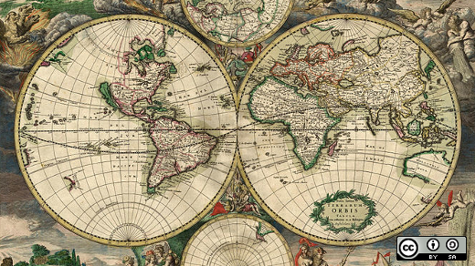

Darwin Information Typing Architecture (DITA)
Why are our customers using DITA?
- Open Standard
- Separation of source from presentation
- Content reuse = less maintenance
- More reliable content via source validation
- Multi-channel output
What's a Ditamap?

- For writers: An organizational aid
- For publishing: Links to resources related to publishing
- For end users: Ditamaps can be used for navigation like a table of contents
(TOC)
What’s a Topic?
- A chunk of information that can stand on its own
- Topics can have either *.xml or *.dita extension
- Three basic topic types in DITA